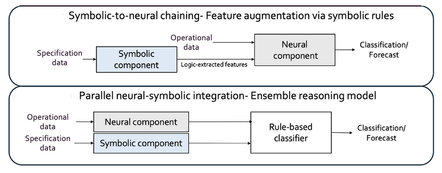
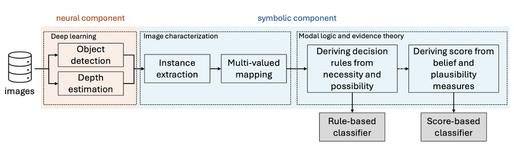
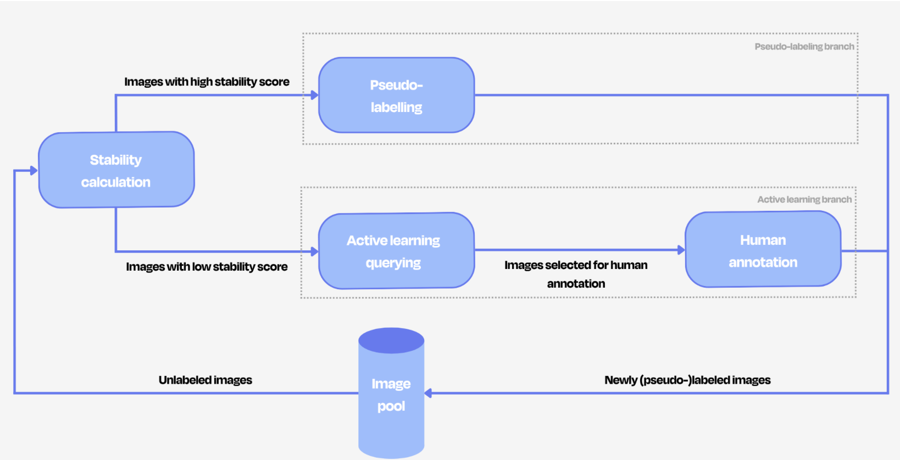
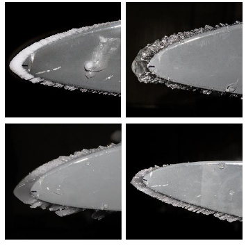

Projects
Vehicle failure prediction
Publication (awaiting publishing) | TalkNeuro-symbolic AI | Evidence Theory | Prognostic Health Management
Forecasting failures in heavy duty vehicles by integrating background knowledge and time series data from onboard sensors within a neuro-symbolic workflow (2026).
Read more
Predicting vehicle failures in advances allows to improve the asset's reliability and performance, as well as limiting repair costs and potential delays caused by unexpected malfunctions. The developed method predicts which vehicles will incur in a failure by combining a symbolic component and a neural component.
The symbolic component is applied to the data representing the technical characteristics of the vehicles (e.g. engine type)- considered background knowledge; it exploits the concepts of possibility and necessity from modal logic and the concepts of plausibility and belief from Dempster-Shafer theory, to compute the likelihood to failure of a vehicle, solely based on its technical specifications.
In order to perform the failure forecasting, two approaches are developed: in the symbolic-to-neural chaining approach, the outputs of the symbolic component are fed as extra features to the neural component, together with the time series data; in the parallel neural-symbolic integration, the outputs of both components are combined by a rule-based model.
The integration of symbolic reasoning and deep learning models allowed to outperform purely deep learning-based solution on the benchmark dataset.
Scene classification for abandoned object detection
Publication | TalkNeuro-symbolic AI | Computer Vision | Evidence Theory
Interpretable framework integrating deep learning, modal logic, and evidence theory, to deal with uncertainty in real-world data and detect abandoned luggages in public settings.(2025).
Read more
The project tackles the challenges involved in categorically classifying scenes from static images, specifically frames from surveillance videos: the complexity, inherent ambiguity, and variability of real-world situations, and the lack of available datasets due to privacy constraints and the cost of labelling image data.
The developed approach pre-trained deep learning (DL) models to frames extracted from surveillance videos, and derives domain-relevant binary attributes (e.g. whether the image contains a luggage) from the DL models' outputs. Through modal logic, each class in the classification task is characterized, by its possibility and necessity conditions, i.e. the attributes that an image can or has to satisfy in order to belong to a certain class. This allows to construct a rule-based classifier that indicates whether a frame contains an abandoned luggage. Dempster-Shafer theory can be applied to compute the plausibility and belief measures of each frame, quantifying its likelihood to belong to a certain class. This allows to construct a score-based classifier returning a likelihood score for a frame containing an abandoned luggage.
The full workflow can be seen below.

The usage of modal logic and Dempster-Shafer theory to deal with ambiguous situations allows to avoid misclassifications, to signal uncertain scenario, and to obtain interpretable results.
Embedded AI: object detection with active learning
ArticleComputer Vision | Active learning | Self-supervised learning | Embedded AI
Light-weight solution improving the performance of object detection models through active learning and self-supervised learning. (2025).
Read more
The project focuses on improving the performance of object detection models focusing on detecting abandoned objects in public spaces. The goal is to detect abandoned objects automatically and alert security teams in real time, while avoiding false alarms. Due to privacy and latency constraints, the model needs to run directly on camera or local gateways, without sending data to the cloud.
Achieving the goal is not possible without a performant object detection model capable of individuating abandoned objects. However, public databases rarely show scenes relevant to the use case, also because abandoned objects are rare, image labelling is expensive, and real image databases cannot be publicly shared, making it difficult to train models. Moreover, the use case puts constraints on the size of the model, as it needs to be lightweight to run without relying on a cloud server.
In order to improve the performance of a YOLO tiny model, a representative dataset was selected from a number of public datasets (COCO 2027, Visual Genome, etc.) by computing the similarity of each image's embedding with a small set of relevant images. Then, the labelling cost issue was addressed by implementing a pipeline exploiting semi-supervised learning and active learning; thus, the model can also learn from unlabelled images and ask for help from a human expert for the most complex cases. The complexity of an image is estimated by calculating a metric called stability score, considering both label and location of an object.

The solution was packaged in Docker components and optimized to run on a NVIDIA Jetson Orin platform.
Supply chain optimization
ArticleForecasting | Time series | Federated learning
Time series forecasting for outbound volume prediction and and stock management optimization (2024).
Read more
In today's interconnected and unstable world, supply chains are affected by countless factors, making the predicting changes and adapting to them very difficult but essential. One additional challenge involves the fact that usually several companies are involved in the same supply chain, but companies are reluctant to share sensitive data and intellectual property. Thus, the project focuses on developing an architecture allowing privacy-preserving data exchange in supply chain environments.
Two approaches were explored: in the first, instead of sharing the actual data among companies participating to the same supply chain, machine learning algorithms were employed to synthetically generate anonymized datasets retaining the statistical properties of the original data. In the second approach, federated learning was exploited; the models are trained locally on each company's data and only the model parameters are shared and combined in a global model.
These approaches allow companies to benefit from each other's data and contribute ro a more efficient supply chain, without having to share sensitive data.
Blade icing prediction
PublicationForecasting | Time series | Renewable energy | Prognostic Health Management
Novel data-driven approach to estimate risk of icing on the blades of wind turbines (2023).
Read more

Wind energy forms a significant portion of the total renewable energy produced yearly; 20-30% of all wind turbine installations are located in areas with harsh meteorological conditions, which have more land availability and better wind resources, but also an increased risk of ice formation. The formation of ice on the blades of wind turbines can affect their power production, damage the assets, and be the cause of safety hazards. Predicting blade icing in advance allows to mitigate or even prevent altogether its impact on the turbines.
The project proposes a data-driven approach to estimate the risk of blade icing in a wind turbine. First, a repository of relevant meteorological profiles, i.e. combinations of weather conditions the turbine operates in at a given time, was created. The impact of each variable in the formation of icing was considered when identifying prototypical icing profiles. Then, the icing risk for new meteorological profiles is computed by calculating the distance from the reference repository, and converting the distance to a more easily interpretable icing score. A hybrid model, which combines the described method with the Makkonen physical model to compute ice accretion, was also tested.
The method can capture the progressive nature of the icing process better than models assigning binary labels, common in the state of the art. Moreover, it only requires easily obtainable meteorological data in order to compute the icing risk.
Data-driven product monitoring and optimization
Root-cause analysis | Profiling | Context-aware failure detection
Device and context profiling, root-cause analysis for failures during the testing process of newly produced devices (2022).
Read more
Devices to be used in harsh environment require strict extensive testing. Early failure detection in the production flows allows for significant savings in time and resources, and maximizing the reliability of the final product is essential, as data from failures occurring later on in the field are often not available. However, failure data is extremely rare, leading to very imbalanced datasets and making it challenging to train supervised machine learning models.
The project focused on early detection of future failures through anomaly detection algorithms, with the goal of optimizing the number of tests actually needed and making the testing pipeline more efficienty, and on analyzing the correlation between different tests, to group together similar test outputs and perform root cause analysis of eventual failures, through clustering, changepoint detection algorithms, and modal analysis.
Matchmaking of expert profiles for creativity boosting
ArticleMatchmaking | NLP | Pattern mining
Boosting creativity by matching expert profiles to suggest team composition and tool sets for cocreation sessions (2022).
Read more
The project was carried out in collaboration with a consortium of communication companies, who organize cocreation sessions where, ideally, the perfect combination of people and profiles capable of conceiving creative solutions to a given issue, are reunited. The goal was to automate finding a team composition and identify a tool set that would lead to maximized creativity during the session.
Standard feature engineering approaches, pattern mining techniques, and clustering approaches were exploited, in order to individuate the group of people and tool set most likely leading to a succesfull cocreation session.